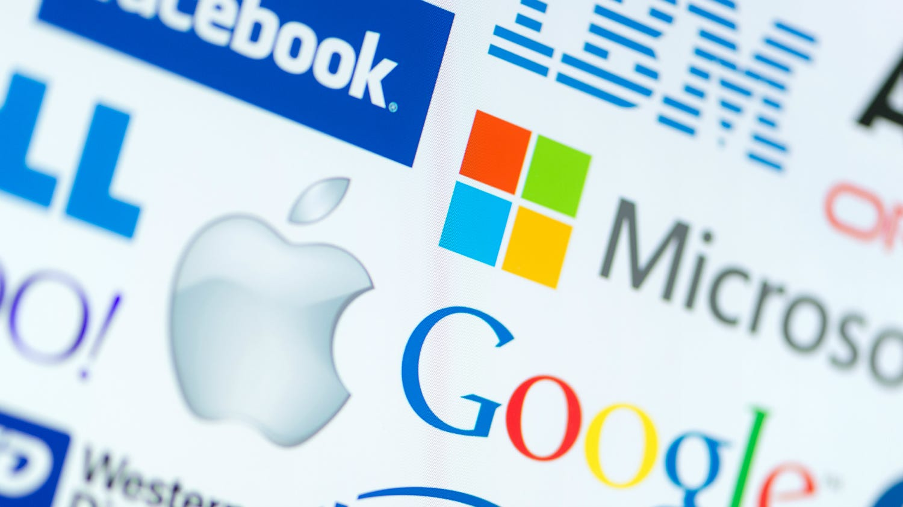
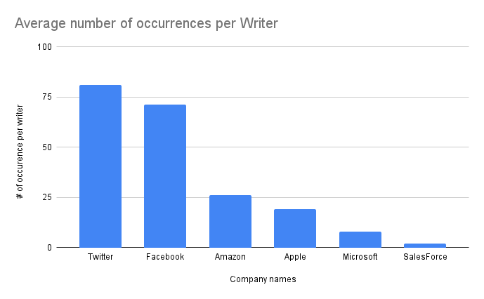
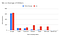
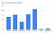
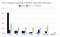
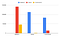

Metrics of names of tech companies
Example of Medium, Wired, and TechCrunch


They, tech companies, make our everyday life. From this last call we have made and this last application we have used, it is almost like we could not live without the products and services that tech companies like Microsoft, Amazon, Google, Twitter, and others provide to us. I was willing to know how many do we write about them on publishing platforms like Medium, Techcrunch, and Wired because I know that we talk a lot about them but when it is about writing, I had no clues then I decided to make the analysis and to share it with you. The analysis collect and count the number of occurrences of the name of tech companies in these publishing platforms and the number that you are going to see are based on a proxy estimation system that does have a level of error but it clearly is a good estimation method that I can’t explain the how but you can trust the data because they are relevant.
The relation between Twitter and Medium is a strong relationship that we Medium and Twitter users should have noticed because in Medium we can embeds tweets and our Twitter username is often the same as our medium’s username plus the fact that many of medium profiles pages are linking to Twitter profiles pages. These facts are visible with the data of the occurrence of Twitter in Medium because if we don't take google as part of the list of tech companies, Twitter is the most referenced tech company by Medium with an average number of occurrences of the word Twitter per writer of 75 times.

As I did in all these articles about metrics and words, I also tried to compare my writing experience with this theoretical average writer, and here is what I got from the data I have gathered. Apart from google. Twitter and Facebook, I am way above this average writer in citing Amazon, Apple, and Microsoft but I have noticed that like other medium writers I have never written about salesforces which is a big and brilliant tech company that is very successful. It's not done on purpose but maybe because I have no tech-enabled idea related to SalesForce but as I have noticed this I would probably take more care about this tech company and will maybe a day write about it.


Now let’s compare the amount of exposure that tech companies get from not only Medium publication but also other publishing platforms like TechCrunch and Wired who are publishing companies specialized in the tech industry providing on daily basis news and trends about the best technologies and startups of silicon valley and of the world. The chart below shows the number of occurrences of the tech companies we have chosen to study.

Here the main remark we can do is that a part of google TechCrunch is the publishing platform that cites the most the names of tech companies followed by wired what’s looks obvious because these two publishing platforms are more tech specialized than Medium by when we only consider Google as Studied tech company the trend change and Medium is the one who references Google the most. My assumption this trend reversal is that Medium host more writer like me who are not professional tech journalist but just people telling what matters to them and sharing knowledge with other and in such kind of situation we often rely on google to provide proof by providing a link to query or to an image found in google. Google is for us a source of information and facts that we use as pillars for our stories and theories and this is why Google is the most referenced tech company in Medium but this is an assumption of mine that should be proven with more data.
What I thought also interesting for you and me is to see how these three publishing companies are cross-referencing themself by citing or linking each to others. Here are the chart and the table that shows this data

The first thing that I have noticed is how little Wired references Techcrunch and vis versa (more accentuated for wired case) what highlight us that this two publishing company are competing on the same space that’s why they are less open to advertize their competitors by writing about them or linking to them. The other fact is that Medium is referencing more the others than they do and Medium references Wired 2 times more than it does for TechCrunch but I don't know what is the cue behind this fact is maybe because like for the case of Google, Wired is more popular among us medium’s writer than TechCrunch but this is also an assumption to prove with real hard data.
If you would like to read more articles about words and metrics like this one you can visit this medium list below